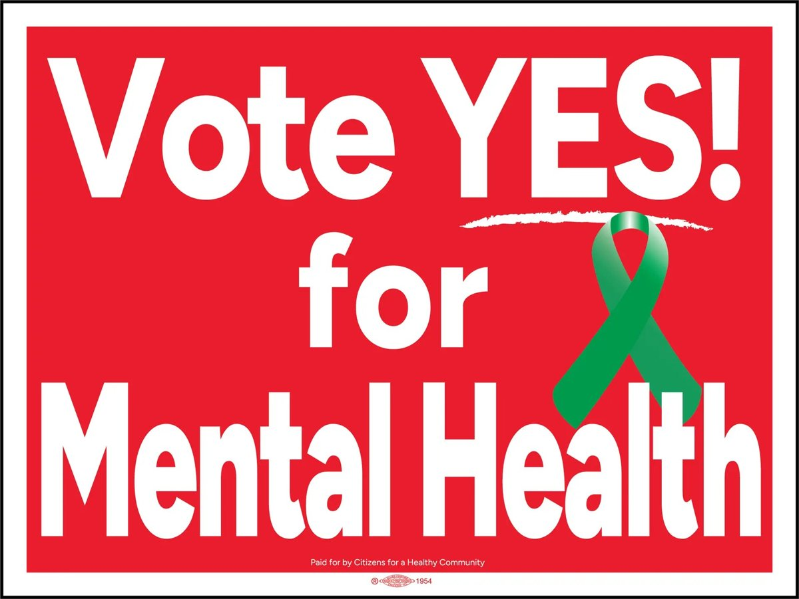
Yes for Mental HealthYou extended the half-cent sales tax for mental health through June 30, 2031.
The next referendum is likely November 2030.
From the most recent Impact Report (Program Year 2023–24):
Current performance data is published by the Winnebago County Community Mental Health Board at Region 1 Planning Council:
Impact Report (PY3) FY2025 Annual Report Live Data Dashboard Funded Programs
The cornerstone of this progress is the Community Support System (CSS) Framework — a research-based model, long held as the national standard, that defines the full array of services people with serious mental illness need to live and recover in their community. It relies on local data and local input.
Adherence to this framework is what ensures continuity: it shields the work from distraction and mission creep, protects it from arbitrary political agendas, and keeps the governing board faithful to the ideal the voters endorsed.
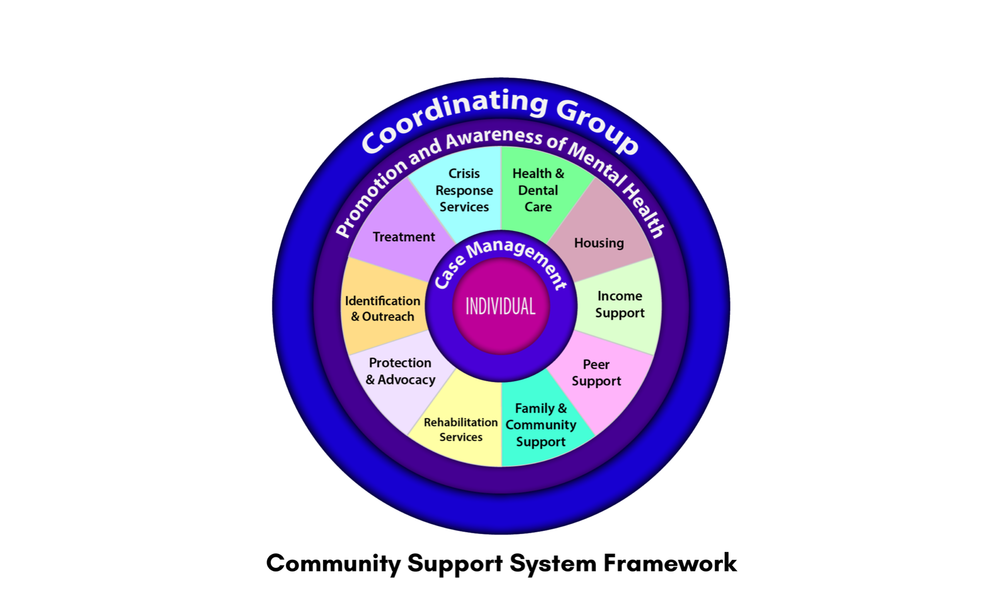
Through analysis of local data and public input, the Board identified six priority areas for funding within the CSS:
The Winnebago County Community Mental Health Board was established in 2020 by an overwhelming majority of voters and is an appointed group of community leaders who are passionate about mental health and substance abuse. The Board is evidence-based, process-oriented, outcome-informed, always urgent, and focused on excellence for everyone and everywhere.
Meetings are open to the public: the first Wednesday of each month, 2:00 PM. Details are on the Board meetings page.
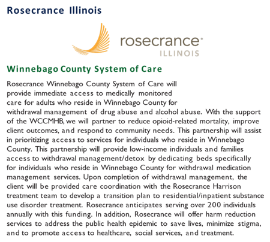
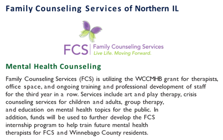
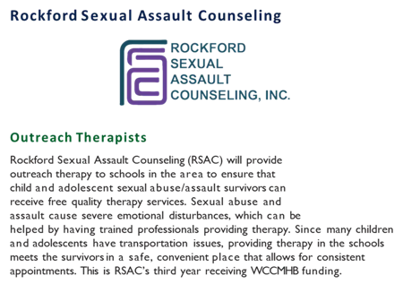
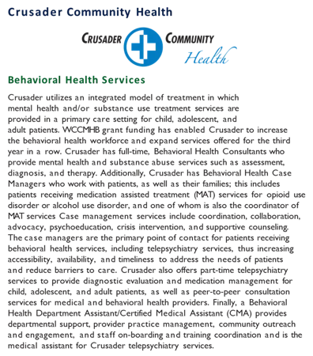
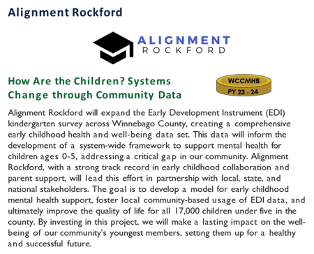
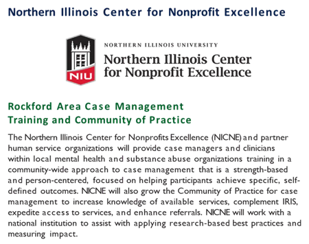
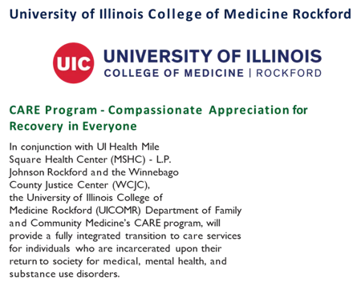
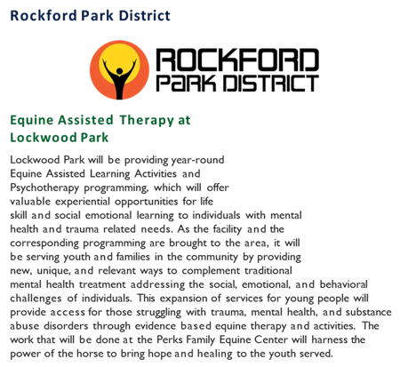
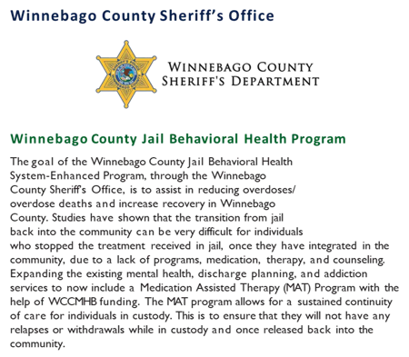
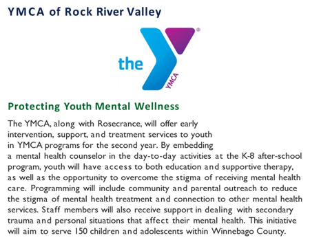
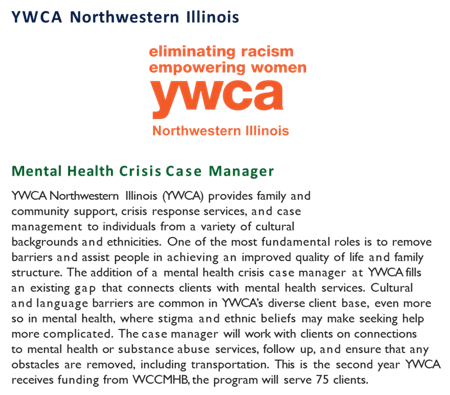
Citizens for a Healthy Community will be back in November 2030 to ask voters to continue this work.
Donate Now